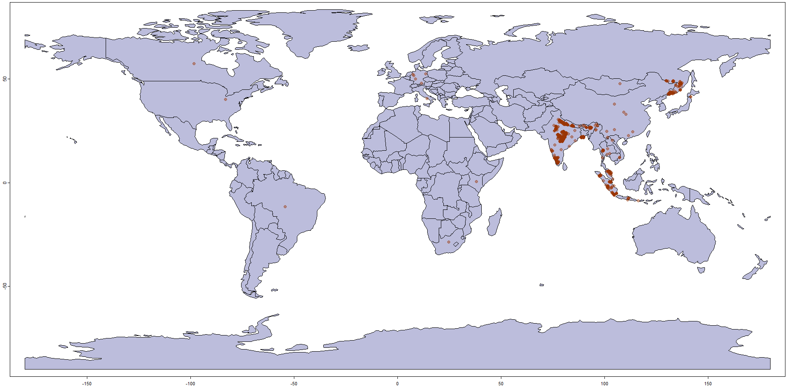
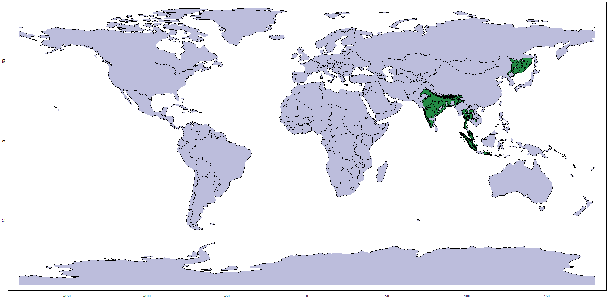
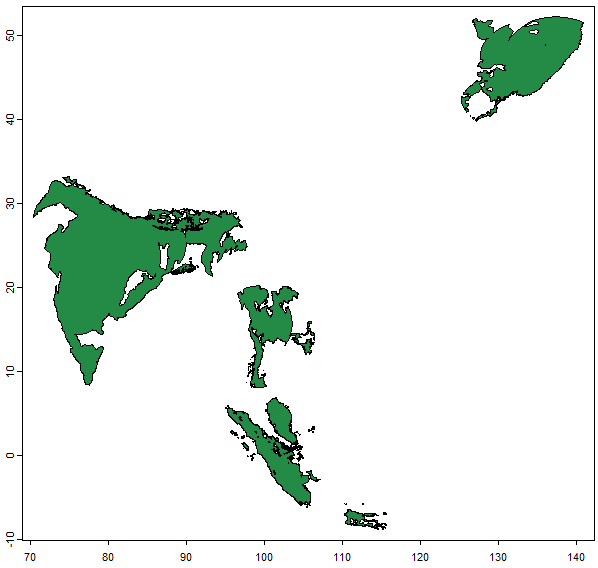
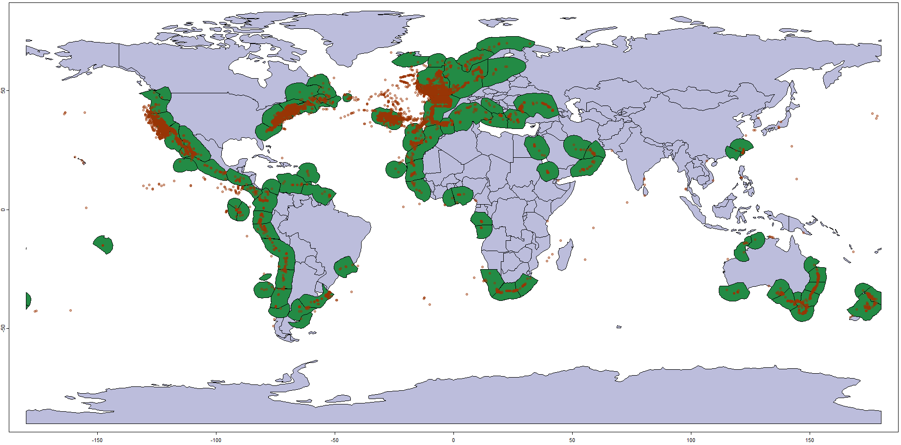
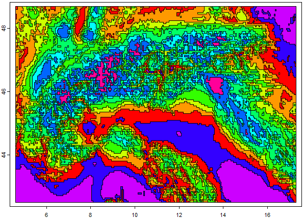
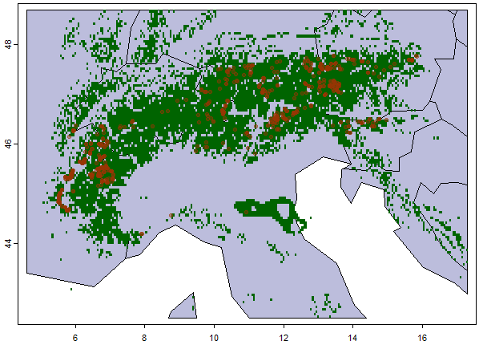

Scope
This vignette gives a high-level tour of gbif.range and
covers the three most common single-species workflows end to end:
- a terrestrial example (Panthera tigris)
using
get_status(),get_gbif(), andget_range()with the packaged eco_terra ecoregions, - a marine example (Delphinus delphis)
demonstrating the
occ_sampsampling argument for very large record volumes, - a local example (Arctostaphylos alpinus in
the European Alps) showing how to build a custom ecoregion layer with
make_ecoreg().
For deeper coverage of each topic, see the three focused vignettes:
-
vignette("gbif-retrieval-and-taxonomy", package = "gbif.range")— taxonomy, filtering, thinning, and DOI generation, -
vignette("ecoregion-constrained-range-inference", package = "gbif.range")—get_range()in depth, packaged and custom ecoregions, evaluation, -
vignette("large-downloaded-gbif-tables", package = "gbif.range")— the disk-based batch workflow for large multi-species GBIF exports.
Installation
remotes::install_github("8Ginette8/gbif.range", build_vignettes = TRUE)
library(gbif.range)Install with build_vignettes = TRUE so that
browseVignettes("gbif.range") finds all workflow vignettes
after installation.
Package overview
gbif.range provides a complete workflow from raw GBIF
records to ecologically informed range maps. Spatial operations
throughout rely on the terra package (Hijmans 2022). The
main functions are:
| Function | Role |
|---|---|
get_status() |
Inspect the GBIF backbone taxon concept, synonyms, infra-specific taxa, and IUCN status |
get_gbif_count() |
Estimate record volume before downloading |
get_gbif() |
Credential-free, synonym-aware occurrence download with 13 post-processing filters |
obs_filter() |
Grid-based occurrence thinning |
get_range() |
Ecoregion-constrained range inference |
read_ecoreg() |
Download and read packaged ecoregion files |
make_ecoreg() |
Build a custom ecoregion layer from environmental rasters |
make_tiles() |
Generate GBIF-ready POLYGON() tiles for explicit tiling
workflows |
get_doi() |
Create a citable GBIF-derived DOI for downloaded records |
evaluate_range() |
Validate a range map against user-supplied distribution data |
cv_range() |
Cross-validate a get_range() output against its
occurrence data |
split_gbif_by_species() |
Stream a large downloaded GBIF table and write one file per species |
species_csvs_to_ranges() |
Build one range per species from per-species occurrence files |
read_range_rds() |
Read a .rds range file saved by
species_csvs_to_ranges()
|
Terrestrial example: Panthera tigris
Inspect the taxon concept
Before downloading, get_status() shows which accepted
name and synonyms get_gbif() will use internally, and
retrieves the current IUCN Red List status from the GBIF backbone.
# Accepted name and direct synonyms only (the default)
get_status("Panthera tigris")
# Also include infra-specific taxa (subspecies, varieties) —
# these are the keys actually used by get_gbif()
get_status("Panthera tigris", level = "children")level = "all" additionally returns alternative name
representations for manual inspection, but those extra entries are not
used for occurrence retrieval.
Download occurrences
obs.pt <- get_gbif(sp_name = "Panthera tigris")get_gbif() works without GBIF credentials. It is built
on top of rgbif (Chamberlain et al. 2022) and harmonizes
the query to the accepted GBIF taxon key, applies a dynamic
moving-window tiling strategy when the geographic extent contains more
than 100,000 records, and runs 13 configurable post-processing filters
based on custom logic and CoordinateCleaner (Zizka et
al. 2019).
countries <- rnaturalearth::ne_countries(type = "countries", returnclass = "sv")
terra::plot(countries, col = "#bcbddc")
points(obs.pt[, c("decimalLongitude", "decimalLatitude")],
pch = 20, col = "#99340470", cex = 1.5)
Note that some records of likely captive individuals remain (e.g., in
Europe, the U.S., and South Africa) — the default
CoordinateCleaner-based filters do not remove all zoo or
botanical garden records. The get_gbif() help page
documents the available post-processing arguments for stricter
cleaning.
Build the range map
# Download and read the packaged terrestrial ecoregions (The Nature Conservancy 2009)
eco.terra <- read_ecoreg(ecoreg_name = "eco_terra", save_dir = NULL)
range.tiger <- get_range(
occ_coord = obs.pt,
ecoreg = eco.terra,
ecoreg_name = "ECO_NAME",
degrees_outlier = 5,
clust_pts_outlier = 4
)
terra::plot(countries, col = "#bcbddc")
terra::plot(range.tiger$rangeOutput, col = "#238b45",
add = TRUE, axes = FALSE, legend = FALSE)
degrees_outlier and clust_pts_outlier
control how isolated clusters of observations are handled before the
ecoregion lookup. Increasing either parameter produces a more
conservative range that excludes more distant clusters; the defaults
(~550 km and ~440 km respectively) already removed the most obvious
anomalies in Europe, the U.S., and South Africa for this example.
Marine example: Delphinus delphis
For species with very large GBIF footprints, occ_samp
extracts a subsample of n observations per geographic tile
rather than retrieving all available records. This trades completeness
for speed and is appropriate for exploratory analysis or very
broad-extent range inference.
⚠️ Note that the download takes longer without occ_samp.
Although giving less precise observational
distribution, occ_samp allows extracting a
subsample of n GBIF observations per created
tile over the study area.
# 1000 observations per tile — faster, but less spatially complete
obs.dd <- get_gbif("Delphinus delphis", occ_samp = 1000)
# level = "all" includes doubtful or provisional names for manual inspection
get_status("Delphinus delphis", level = "all")
# Build range maps at three levels of ecoregion detail
eco.marine <- read_ecoreg(ecoreg_name = "eco_marine", save_dir = NULL)
range.dd1 <- get_range(obs.dd, eco.marine, "ECOREGION")
range.dd2 <- get_range(obs.dd, eco.marine, "PROVINCE")
range.dd3 <- get_range(obs.dd, eco.marine, "REALM")
# Plot the coarsest result
terra::plot(countries, col = "#bcbddc")
terra::plot(range.dd3$rangeOutput, col = "#238b45",
add = TRUE, axes = FALSE, legend = FALSE)
points(obs.dd[, c("decimalLongitude", "decimalLatitude")],
pch = 20, col = "#99340470", cex = 1)
The three range levels ("ECOREGION",
"PROVINCE", "REALM") produce similar results
here because most observations are near the coast. Because only a
subsample was retrieved, the resulting map closely follows the GBIF
sampling pattern. Increasing or removing occ_samp would
produce a more complete distributional estimate.
Available ecoregions
The ecoreg_list object lists all ecoregion files that
can be downloaded with read_ecoreg():
ecoreg_listThe packaged ecoregion layers and their available spatial levels are:
| Layer |
ecoreg_name values |
|---|---|
eco_terra — terrestrial (Olson et al. 2001; The Nature
Conservancy 2009) |
"ECO_NAME", "WWF_MHTNAM",
"WWF_REALM2"
|
eco_marine — marine (Spalding et al. 2007; The Nature
Conservancy 2012) |
"ECOREGION", "PROVINCE",
"REALM"
|
eco_hd_marine — high-detail marine coastlines (Spalding
et al. 2007, 2012; The Nature Conservancy 2012) |
"ECOREGION", "PROVINCE",
"REALM"
|
eco_fresh — freshwater (Abell et al. 2008) |
"ECOREGION" |
But, any suitable polygon shapefile can be supplied to
get_range() as the ecoreg argument in place of
the packaged layers.
Local example: custom ecoregions with
make_ecoreg()
For regional analyses the packaged ecoregions may be too coarse.
make_ecoreg() builds a custom ecoregion layer by k-means
clustering of one or more environmental rasters.
The example below first illustrates what a make_ecoreg()
output looks like with 10 classes over the European Alps, using two
CHELSA bioclimatic layers (Karger et al. 2017) — mean annual temperature
(bio1) and annual precipitation (bio12) at 5 × 5 km resolution. The
make_ecoreg() function applies k-means clustering to derive
ecologically coherent units from environmental rasters (Hagen et
al. 2019):
bio <- terra::rast(paste0(system.file(package = "gbif.range"), "/extdata/rst.tif"))
eco.eg <- make_ecoreg(env = bio, nclass = 10)
terra::plot(eco.eg, col = rainbow(10))
For a real regional analysis, more classes are appropriate. The full workflow with 200 classes and Arctostaphylos alpinus:
# Two CHELSA bioclimatic layers for the European Alps at 5 x 5 km resolution
bio <- terra::rast(paste0(system.file(package = "gbif.range"), "/extdata/rst.tif"))
# 200 ecoregion classes
my.eco <- make_ecoreg(env = bio, nclass = 200)
# Download Arctostaphylos alpinus within the Alps bounding box
shp.lonlat <- terra::vect(
paste0(system.file(package = "gbif.range"), "/extdata/shp_lonlat.shp")
)
obs.arcto <- get_gbif(
sp_name = "Arctostaphylos alpinus",
geo = shp.lonlat,
grain = 1 # 1 km precision — appropriate for a local extent
)
# Build the range (always use 'EcoRegion' as ecoreg_name for make_ecoreg() output)
range.arcto <- get_range(
occ_coord = obs.arcto,
ecoreg = my.eco,
ecoreg_name = "EcoRegion",
degrees_outlier = 5,
clust_pts_outlier = 4,
res = 0.05 # 5 x 5 km output resolution
)
# Plot
alps.shp <- terra::crop(countries, terra::ext(bio))
r.arcto <- terra::mask(range.arcto$rangeOutput, alps.shp)
terra::plot(alps.shp, col = "#bcbddc")
terra::plot(r.arcto, add = TRUE, col = "darkgreen", axes = FALSE, legend = FALSE)
points(obs.arcto[, c("decimalLongitude", "decimalLatitude")],
pch = 20, col = "#99340470", cex = 1)
Two design choices matter here. First, grain = 1 keeps
only records with coordinate uncertainty ≤ 1 km; at larger scales the
default 100 km grain is appropriate, but for a small alpine extent it
would retain too many imprecise records. Second, the res
argument sets the output raster resolution, which can be as fine as the
input environmental layers allow.
Large downloaded GBIF tables
For multi-species analyses where GBIF data have already been
downloaded as a single large file, gbif.range provides a
disk-based batch workflow that avoids loading the full table into
memory:
gbif_file <- system.file("extdata", "occ_example_4sps.csv", package = "gbif.range")
split_dir <- file.path(tempdir(), "gbif_split")
range_dir <- file.path(tempdir(), "gbif_ranges")
# 1. Split the large table into one file per GBIF taxon key
split_summary <- split_gbif_by_species(
input_file = gbif_file,
outdir = split_dir,
chunk_size = 100,
sep_in = "\t",
sep_out = "\t",
overwrite = TRUE,
verbose = FALSE
)
# 2. Build one range per species from the per-species files
range_summary <- species_csvs_to_ranges(
species_dir = split_dir,
ecoreg = "eco_terra",
ecoreg_name = "ECO_NAME",
outdir = range_dir,
range_save_as = "rds",
overwrite = TRUE,
verbose = FALSE
)
# 3. Read one saved range back from disk
rg <- read_range_rds(range_summary$range_file[1])
terra::plot(rg$rangeOutput)
This workflow is described in full in
vignette("large-downloaded-gbif-tables", package = "gbif.range").
Next steps
The three focused vignettes cover each part of the workflow in depth.
Part 1 (Ecoregion-Based Range Inference) documents
get_range(), the packaged and custom ecoregion options, and
the evaluation functions cv_range() and
evaluate_range(). Part 2 (GBIF Retrieval, Taxonomy, and
Filtering) covers get_status(),
get_gbif_count(), get_gbif(),
obs_filter(), make_tiles(), and
get_doi(). Part 3 (Large Downloaded GBIF Tables)
describes the disk-based batch workflow built around
split_gbif_by_species(),
species_csvs_to_ranges(), and
read_range_rds().
References
Abell, R., Thieme, M. L., Revenga, C., Bryer, M., Kottelat, M., Bogutskaya, N., … Petry, P. (2008). Freshwater ecoregions of the world: a new map of biogeographic units for freshwater biodiversity conservation. BioScience, 58(5), 403–414. https://doi.org/10.1641/B580507
Chamberlain, S., Oldoni, D., & Waller, J. (2022). rgbif: interface to the global biodiversity information facility API. https://doi.org/10.5281/zenodo.6023735
Hagen, O., Vaterlaus, L., Albouy, C., Brown, A., Leugger, F., Onstein, R. E., Novaes de Santana, C., Scotese, C. R., & Pellissier, L. (2019). Mountain building, climate cooling and the richness of cold-adapted plants in the Northern Hemisphere. Journal of Biogeography, 46(8), 1792–1807. https://doi.org/10.1111/jbi.13653
Hagen, O. Species_Range_Mapping. GitHub repository. https://github.com/ohagen/Species_Range_Mapping
Hijmans, R. J. (2022). terra: Spatial Data Analysis. R package version 1.6-7. https://cran.r-project.org/web/packages/terra/index.html
Karger, D. N., Conrad, O., Böhner, J., Kawohl, T., Kreft, H., Soria-Auza, R. W., Zimmermann, N. E., Linder, H. P., & Kessler, M. (2017). Climatologies at high resolution for the earth’s land surface areas. Scientific Data, 4, 170122. https://doi.org/10.1038/sdata.2017.122
Olson, D. M., Dinerstein, E., Wikramanayake, E. D., Burgess, N. D., Powell, G. V. N., Underwood, E. C., … Kassem, K. R. (2001). Terrestrial ecoregions of the world: a new map of life on Earth. BioScience, 51(11), 933–938. https://doi.org/10.1641/0006-3568(2001)051[0933:TEOTWA]2.0.CO;2
Spalding, M. D., Fox, H. E., Allen, G. R., Davidson, N., Ferdaña, Z. A., Finlayson, M., … Robertson, J. (2007). Marine ecoregions of the world: a bioregionalization of coastal and shelf areas. BioScience, 57(7), 573–583. https://doi.org/10.1641/B570707
Spalding, M. D., Agostini, V. N., Rice, J., & Grant, S. M. (2012). Pelagic provinces of the world: a biogeographic classification of the world’s surface pelagic waters. Ocean & Coastal Management, 60, 19–30. https://doi.org/10.1016/j.ocecoaman.2011.12.016
The Nature Conservancy (2009). Global Ecoregions, Major Habitat Types, Biogeographical Realms and The Nature Conservancy Terrestrial Assessment Units. Cambridge (UK): The Nature Conservancy. https://geospatial.tnc.org/datasets/b1636d640ede4d6ca8f5e369f2dc368b/about
The Nature Conservancy (2012). Marine Ecoregions and Pelagic Provinces of the World. Cambridge (UK): The Nature Conservancy. http://data.unep-wcmc.org/datasets/38
Zizka, A., Silvestro, D., Andermann, T., Azevedo, J., Duarte Ritter, C., Edler, D., … Antonelli, A. (2019). CoordinateCleaner: Standardized cleaning of occurrence records from biological collection databases. Methods in Ecology and Evolution, 10(5), 744–751. https://doi.org/10.1111/2041-210X.13152